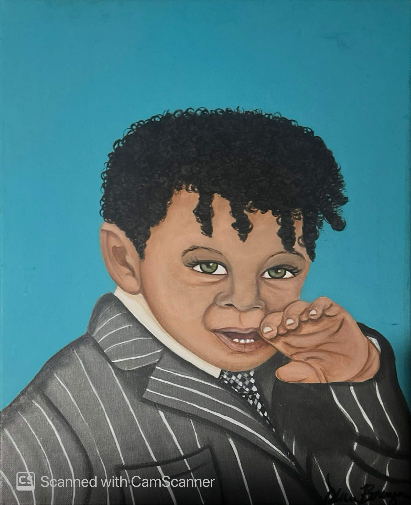

About Jaylin Belfield
My computer science journey is built around combining software, infrastructure, cybersecurity, business, mathematics, AI systems, and game development.
Who I Am
I’m Jaylin Belfield, a Computer Science major with minors in Business and Mathematics. I’m learning how to build useful technology from both the software side and the infrastructure side.
My goal is to understand how complete systems work. That means learning programming, algorithms, server hardware, networking, cybersecurity, AI-powered tools, and the business side of turning technical skills into real services.
How I Started
At the ripe age of 10, I started learning JavaScript and developing game assets for Minecraft. Back then, I had to lie to people about my age just to warrant attention and be taken seriously in online development spaces.
Over time, I started learning 3D modeling and animation through tools like Blender. I also learned how to code in both Java and JavaScript for Minecraft plugins, mods, and scripts. What started as curiosity slowly became a real skillset that connected creativity, coding, game systems, and server communities.
By the age of 15, I had hired employees and started making money from servers and the content I created for the game. That also pushed me into marketing, because I had to learn how to present my work, attract players, and build interest around what I was creating.
That early journey solidified in my mind that I wanted to go further into this field. It showed me that I was a right fit for technology, game development, infrastructure, and building systems that other people could actually use.

My Direction
I’m building toward a future where I can create AI-powered tools, supply server hardware services, develop game-related systems, and grow Belsade Tech into a serious technology platform.
My portfolio represents that journey: learning in class, building outside of class, and connecting computer science with business, mathematics, infrastructure, and creative software projects.
View My Projects